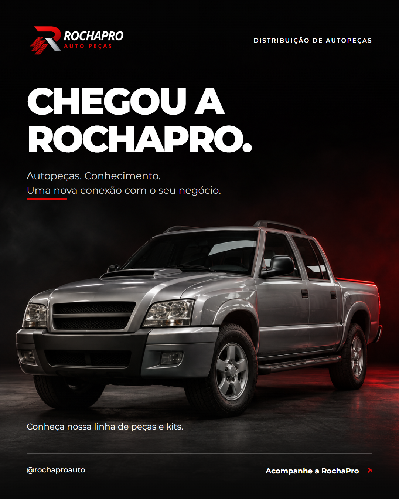
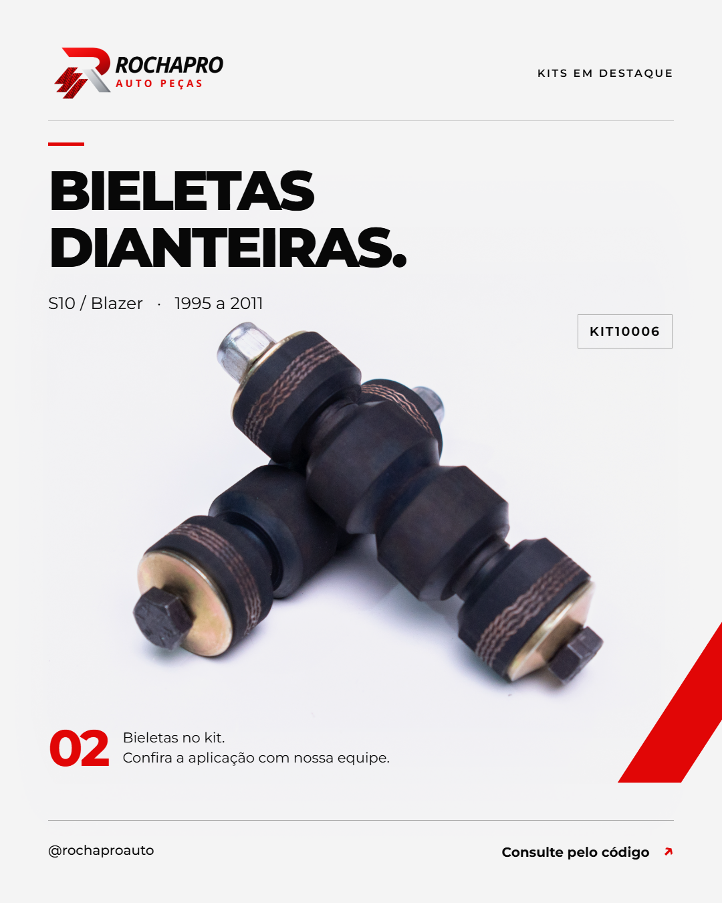
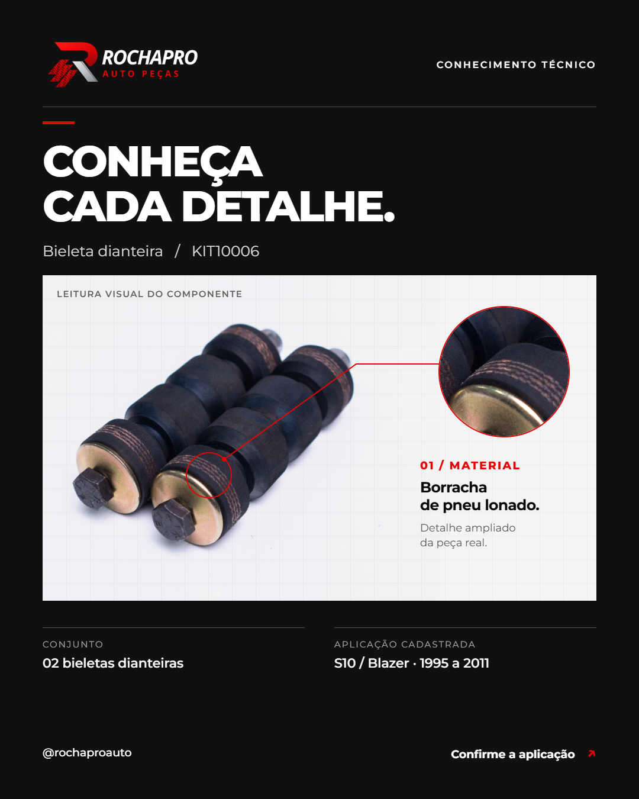

A / Automotive Hero
Presença institucional. Fotografia conceitual e luz controlada.

B / Industrial Product
Produto real. Escala generosa, contraste e respiro.

C / Engineering View
Leitura técnica da fotografia. Material e aplicação cadastrada.